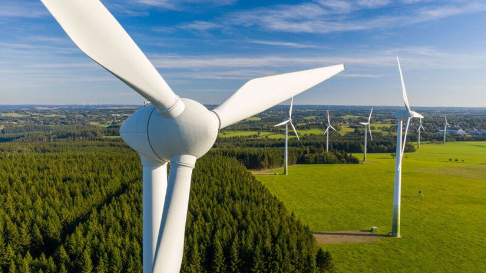
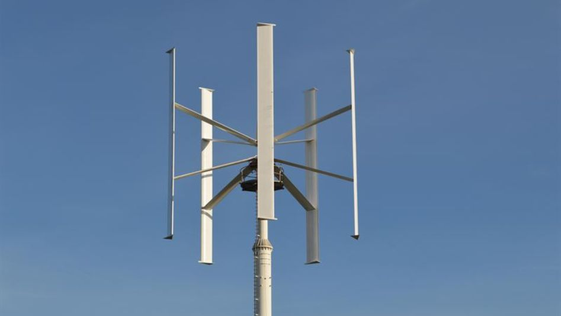

Wind Energy

Wind energy is the process of generating electricity using the wind, or the movement of air through the Earth's atmosphere. It is a renewable and clean source of energy that can help reduce dependence on fossil fuels.
Wind energy is actually a byproduct of the sun. The sun’s uneven heating of the atmosphere, the earth’s irregular surfaces (mountains and valleys), and the planet's revolution around the sun all combine to create wind. Since wind is in plentiful supply, it’s a sustainable resource for as long as the sun’s rays heat the planet.
How Wind Energy works:

Wind turbines work on a simple principle: instead of using electricity
to make wind—like a fan—wind turbines use wind to make electricity.
Wind turns the propeller-like blades of a turbine around a rotor,
which spins a generator, which creates electricity.
Wind is a form of solar energy caused by a combination of three concurrent events:
- The sun unevenly heating the atmosphere
- Irregularities of the earth's surface
- The rotation of the earth.
A wind turbine turns wind energy into electricity using the aerodynamic force from the rotor blades, which work like an airplane wing or helicopter rotor blade. When wind flows across the blade, the air pressure on one side of the blade decreases. The difference in air pressure across the two sides of the blade creates both lift and drag. The force of the lift is stronger than the drag and this causes the rotor to spin. The rotor connects to the generator, either directly (if it’s a direct drive turbine) or through a shaft and a series of gears (a gearbox) that speed up the rotation and allow for a physically smaller generator. This translation of aerodynamic force to rotation of a generator creates electricity.
Types of Wind Turbines
Mostly wind turbines fall into two basic types:
Horizontal-Axis Turbines
Horizontal-Axis Wind Turbines (HAWT) have blades that rotate around a horizontal axis, making them the most common type of wind turbines, typically used in large-scale wind farms. These turbines are highly efficient in consistent wind conditions and benefit from extensive research and development. However, they require a yaw mechanism to turn the blades toward the wind, adding to their complexity. HAWTs generally have larger and more intricate structures compared to their vertical-axis counterparts.
vertical-Axis Turbines
Vertical-Axis Wind Turbines (VAWT) have blades that rotate around a vertical axis, allowing them to capture wind from any direction without needing a yaw mechanism. This design makes them particularly suitable for turbulent wind conditions, such as those found in urban areas. VAWTs are easier to maintain since their generator and gearbox are located closer to the ground. However, they are generally less efficient than HAWTs and are limited by the height and length of their blades, making them more suitable for small-scale applications.
Current Status:
- India is one of the leading countries in wind energy capacity, with significant installations in states like Tamil Nadu, Gujarat, Maharashtra, and Karnataka.
- The Indian government aims to achieve 100 GW of wind energy capacity by 2030.
Government Initiatives:
- The Indian government has implemented various policies to promote wind energy, such as tax incentives, feed-in tariffs, and renewable purchase obligations (RPOs).
- Programs like the National Wind-Solar Hybrid Policy aim to optimize the use of transmission infrastructure and land.
Potential for Growth:
- India has a vast potential for wind energy, particularly in coastal and high-altitude regions.
- Advances in technology and favorable policies are expected to drive further growth in the sector.
Challenges and Solutions of Wind Energy
| Challenge | Solution |
|---|---|
| Intermittency | Integrating wind power with other renewable sources, using energy storage systems, and improving grid management. |
| Noise and Visual Impact | Proper siting, technological advancements, and community engagement. |
| Wildlife Impact | Careful site selection, wildlife monitoring, and turbine design improvements. |